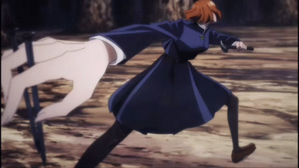

Limitless is a cursed technique
that allows its user to manipulate
space at will.
Gojo inherited the
Limitless technique from his
family, but it can only be truly
mastered by one who also
possesses Six Eyes. Through
cursed energy manipulation, Gojo
has absolute control over space
at an atomic level.
 He doesn't seem to have an
He doesn't seem to have an
innate technique, but he has
shown great proficiency with
learning
how to control cursed
energy. Currently, Yuji primarily
uses cursed energy combined
with his martial arts skills
and
superhuman strength to reinforce
his strikes, increasing their impact
and allowing him to hurt curses
Does Megumi have a cursed
technique?
The Ten Shadows Cursed Technique gives Megumi the
ability to call on ten powerful
shikigami, but its true power
comes from its flexibility in
combat. Despite the great lengths
Megumi has pushed his cursed
technique to, fans
know that one
cannot rule the shadows with
cursed techniques alone

Nobara Kugisaki's "Straw Doll Technique" grants her the ability
to manipulate her hammer, nails,
and straw doll. By flowing
her
cursed energy through her equipment,
Nobara can launch nails from
long range and detonate them, or
use her straw doll as
an effigy to
deal damageo her opponent's body.
.btn-last{
float: right;
font-size: 1.2em;
background: blue;
text-decoration: none;
color:white;
padding: .5em 1.5em;
transition: transform 200ms ease-in-out;
}
.btn-last:hover {
background-color: darkred;
transform: scale(1.1);
}